Steps
- Check the actual member IP
- Start a policy for Zwolle
- Configure the five components
- Configure ObjectType
- Configure Address
- Set category matching and save
- Save the HST value
- Save each group's own address
- Review the proposals
- Preview and activate the policy
- Check both compliant results
- Optional: import many values
Check the actual member IP
- Open Naming compliance, choose Zwolle, then open All groups.
- Search for
SZ-TZW-EXT-HSTand click Apply filters. - For the group ending in
.150, click View naming evidence. - Under Explicit members / addresses, verify that its membership definition contains the single host address
10.128.196.150. Repeat for the.151group.
Use membership as the evidence, rather than copying the address from a potentially incorrect name. The NSX “Generic” label alone does not establish a single-IP static definition. A subnet, address range, several members or nested groups needs a different convention.
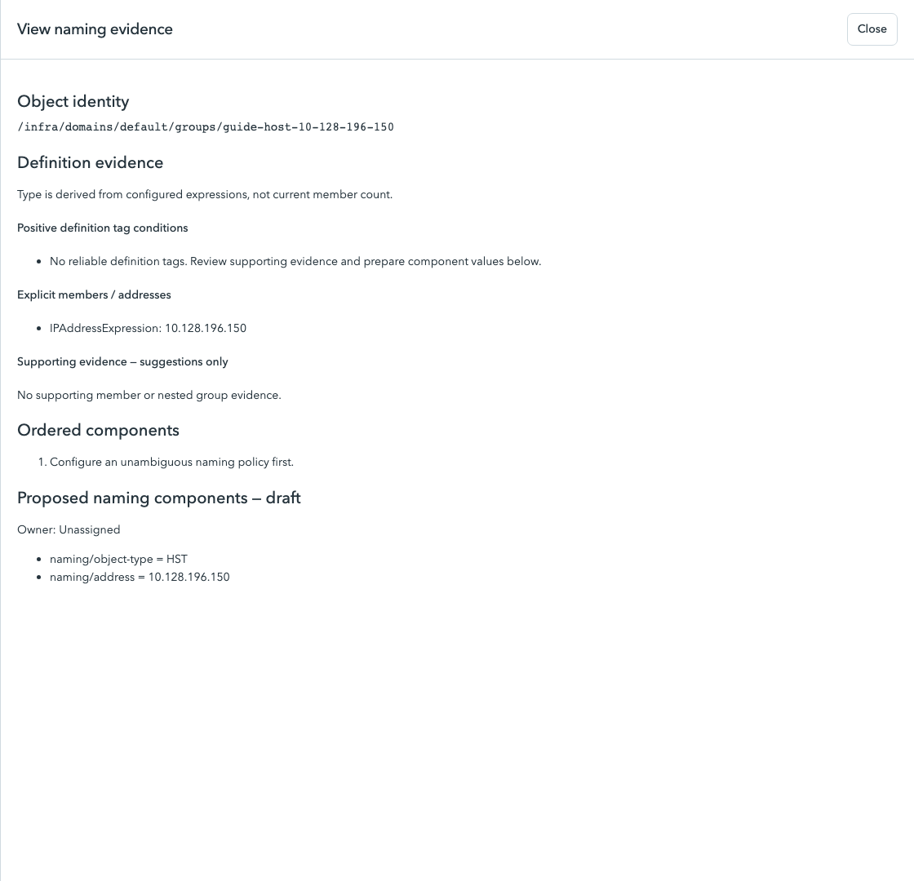
Start a policy for Zwolle
Click Naming policies → New policy. Policy creation and activation require an administrator; preparing and reviewing component proposals require operator access.
| Field | Enter / select |
|---|---|
| Name | Zwolle Static EXT HST |
| Environment | Zwolle |
| Group type | Static |
| Separator | Hyphen (-) |
| Maximum name length | 63 |
| Match condition | Exact category value |
Leave Category field and Category tag value temporarily blank while you configure the components. Do not save or activate an unrestricted fallback policy. You will complete both category fields in Step 6. The environment is fixed after creation, so choose Zwolle before the first save.
If your new draft already has five starter components named Environment, Location, Application, Role and Instance, edit those five rows in the next step. Do not leave the starter rows in place and add five more.
Configure five components in this order
Click Name components at the top. Click a component's summary to open its editor. Change the fields below, then click Done editing. This closes the editor; the main Save draft button persists the whole policy later.
| Order | Logical field | Source | Fixed text / Default tag scope |
|---|---|---|---|
| 1 | Prefix | Fixed text | Fixed text: SZ |
| 2 | Site | Fixed text | Fixed text: TZW |
| 3 | Zone | Fixed text | Fixed text: EXT |
| 4 | ObjectType | Definition tag / reviewed scope value | Default tag scope: naming/object-type |
| 5 | Address | Definition tag / reviewed scope value | Default tag scope: naming/address |
Check Required for every component. For Prefix, Site and Zone, expand Formatting and value mappings: use UPPERCASE, Letters and digits, maximum length 32, and leave Value mappings empty. Use Move up / Move down or Order to arrange the five rows.
ObjectType and Address are custom fields you create here. A scope is the key under which the analyzer stores a reviewed value. Type the new scope yourself; Choose existing scope does not need to find these custom keys in NSX.
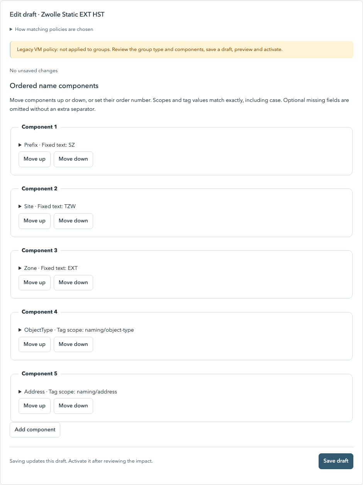
Configure ObjectType
| Field | Value |
|---|---|
| Logical field | ObjectType |
| Source | Definition tag / reviewed scope value |
| Default tag scope | naming/object-type |
| Required | Checked |
| Case | UPPERCASE |
| Format | Letters and digits |
| Max length | 3 |
| Value mappings | Leave empty |
| Order | 4 |
Do not enter HST in the Default tag scope field. The scope is naming/object-type; its per-group value will be HST. Click Done editing.
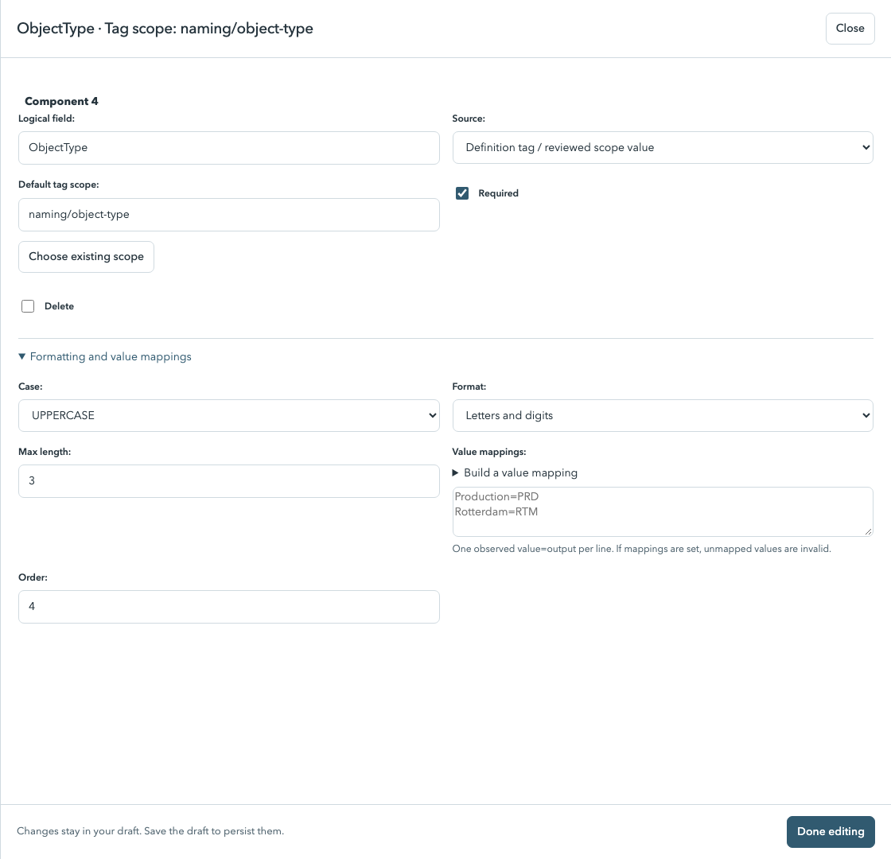
Configure Address
| Field | Value |
|---|---|
| Logical field | Address |
| Source | Definition tag / reviewed scope value |
| Default tag scope | naming/address |
| Required | Checked |
| Case | Keep case |
| Format | Letters, digits, hyphens, dots and underscores |
| Max length | 15 |
| Value mappings | Leave empty |
| Order | 5 |
This is an IPv4-only example. The selected format allows dots; it is not an IP-address validator. Verify each value against explicit membership. Click Done editing.
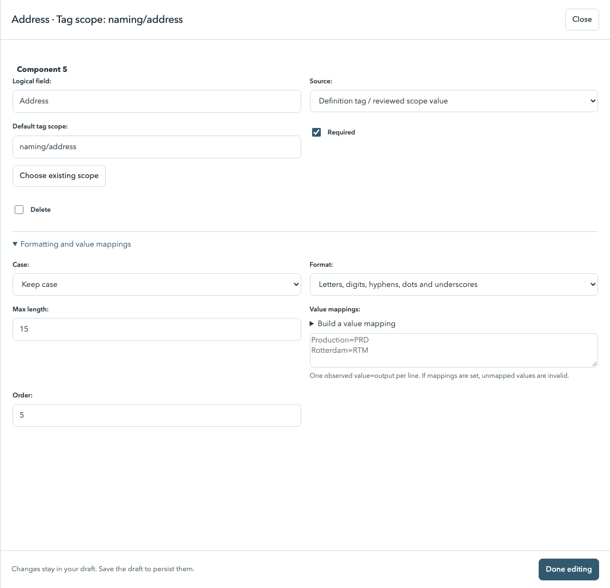
Finish category matching and save the draft
- Return to Scope.
- Set Category field to ObjectType — naming/object-type. It becomes available after you configure that component.
- Type
HSTin Category tag value. Keep Match condition as Exact category value. - Click Save draft.
Despite the label “Category tag value,” matching can use the locally reviewed scope value for these static groups. Do not select Scope exists and do not choose an IP as the category. If ObjectType is missing, go back to Name components and confirm its Logical field and Source.
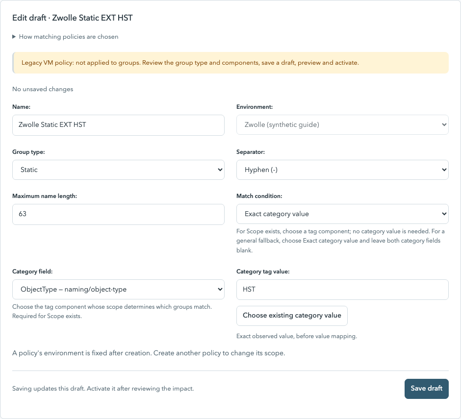
Keep the policy as a draft while preparing the values below. A live example showing no matching group is expected before reviewed HST values exist. If another policy has the same environment, Static type and exact category, resolve that overlap before activation.
Save HST for a group
- Return to Naming compliance → Zwolle → All groups.
- Search
SZ-TZW-EXT-HSTand click Apply filters. Keep the Policy filter empty: the new policy is not active yet. - Select the checkbox for
SZ-TZW-EXT-HST-10.128.196.150. - Click Choose action. Set Action to Prepare component values.
- Enter Scope
naming/object-typeand ValueHST. Note and Owner are optional for saving this component. - Click Save component proposals, check the listed group, then click Confirm changes.
You may select several verified host groups and give all of them HST at once. Use a single selection when learning the workflow. Repeat the HST proposal for the .151 group if you did not include it in a batch.
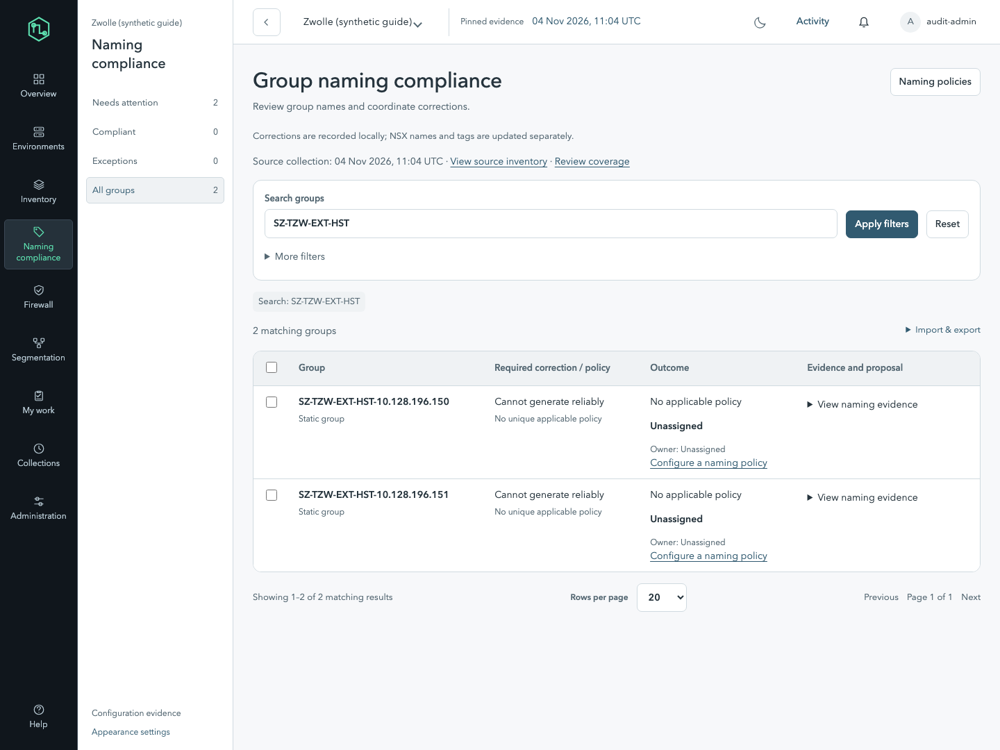
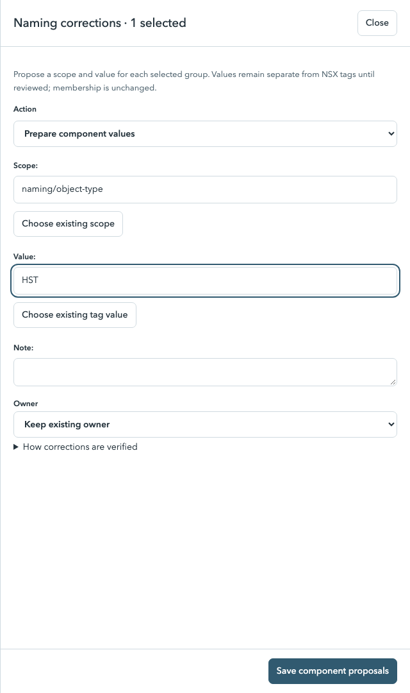
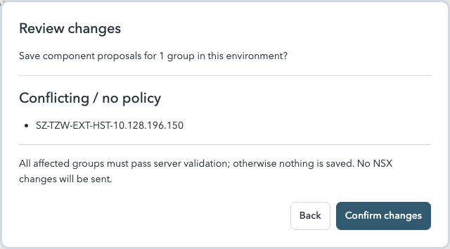
Save .150 and .151 separately
After each save, the selection may clear or the view may return to Needs attention. Reopen All groups, apply your search and select the intended group again.
- Select only
SZ-TZW-EXT-HST-10.128.196.150. - Click Choose action → Prepare component values.
- Enter Scope
naming/addressand Value10.128.196.150. - Click Save component proposals → Confirm changes.
- Select only
SZ-TZW-EXT-HST-10.128.196.151, then repeat using Value10.128.196.151.
Do not select both groups when assigning one address. The form applies the same entered value to every selected group. HST can be shared; these IP addresses cannot.
Saving naming/address keeps the existing naming/object-type proposal for that group. It does not require a separate policy. Editing a component resets its proposal review state, so review after both values are complete.
| Group | naming/object-type | naming/address |
|---|---|---|
SZ-TZW-EXT-HST-10.128.196.150 | HST | 10.128.196.150 |
SZ-TZW-EXT-HST-10.128.196.151 | HST | 10.128.196.151 |
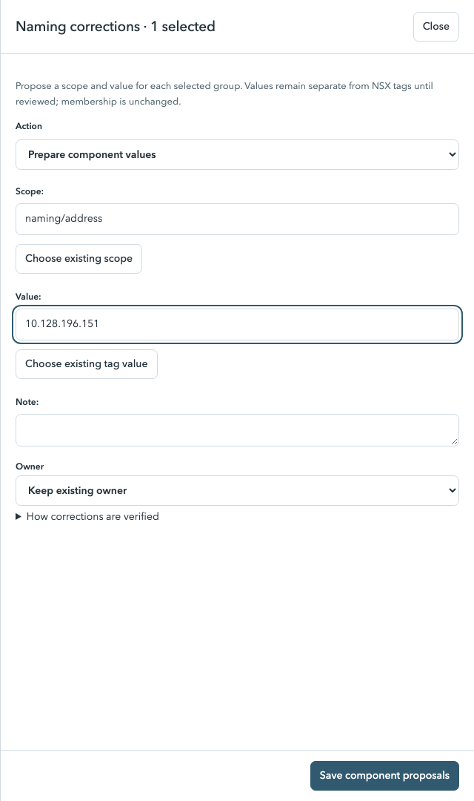
Mark the completed proposals reviewed
- For each group, open View naming evidence. Check that Proposed naming components lists both
naming/object-type = HSTand that group's correctnaming/address. - Compare the address with Explicit members / addresses. Close the evidence panel.
- Select both verified groups, then click Choose action.
- Select Action Mark proposals reviewed.
- Click the bottom button Mark reviewed, then Confirm changes.
Those are two different labels in the current UI: the action dropdown says Mark proposals reviewed; its submit button says Mark reviewed. If the group definition or name changed since you prepared the values, the application rejects a stale proposal. Recheck the new evidence and prepare fresh values.
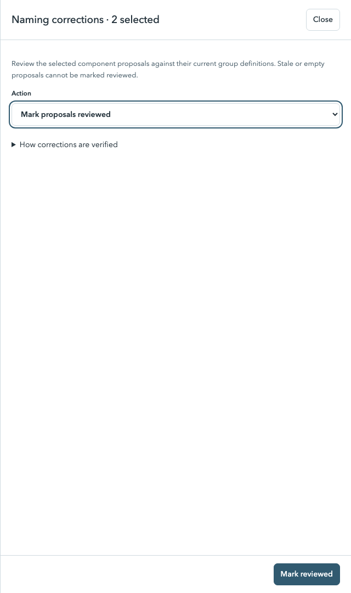
Preview, then activate the policy
- Go to Naming policies and open Zwolle Static EXT HST.
- Click Preview impact at the top, then Preview affected groups.
- Read the outcomes and proposed names. In this two-group example, the preview shows Compliant: 2. Your total may differ if your environment has more groups.
- Check that .150 stays .150, .151 stays .151, and no existing policy becomes ambiguous. Other groups outside the HST category can retain their existing policy or have No applicable policy.
- Under Activate reviewed policy, check I reviewed the impact and want to activate this read-only assessment policy.
- Click Activate policy.
If policies, component proposals or inventory changed after the preview, run Preview affected groups again. Activation requires the current preview. Activation changes read-only assessment in the analyzer; it does not rename either NSX group.
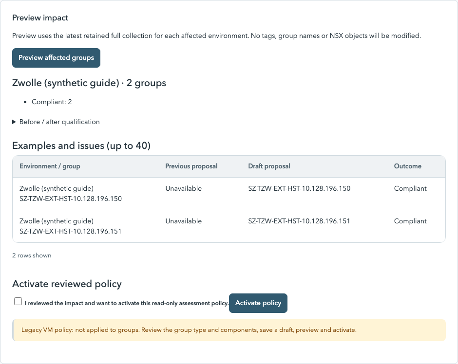
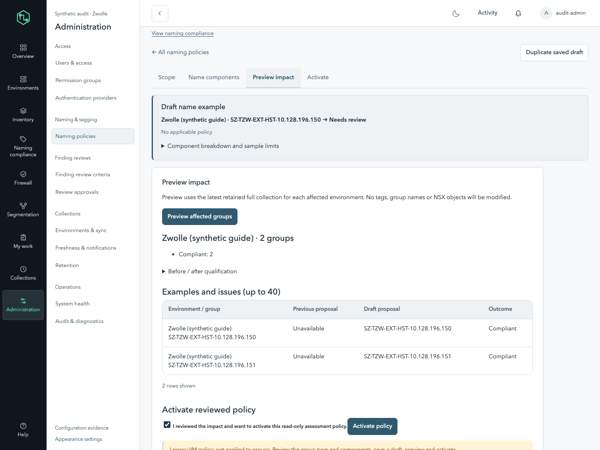
Both addresses use one policy
Return to Naming compliance → Zwolle → Compliant. Search SZ-TZW-EXT-HST if necessary. Both groups should show Zwolle Static EXT HST and Compliant, provided the current name equals its generated name and collection evidence is complete.
SZ-TZW-EXT-HST-10.128.196.150SZ-TZW-EXT-HST-10.128.196.151
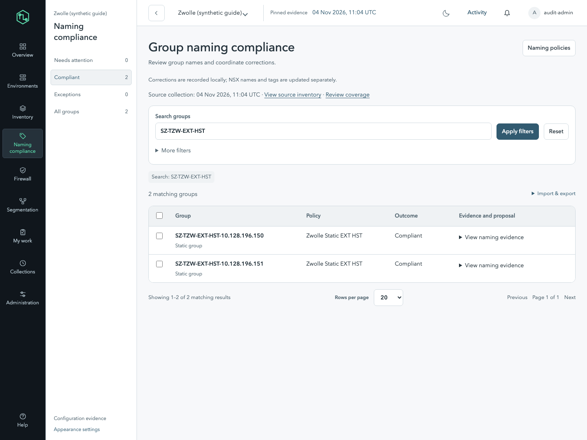
If the expected result does not appear
- No applicable policy: check that the policy is active, the environment is Zwolle, the group is Static, and the reviewed object-type value is exactly HST with the exact scope spelling.
- Missing required tags: check both component proposals exist and are reviewed. Draft values are not used in normal assessment; draft simulation does not establish compliance.
- Name differs: compare the generated name with the actual NSX name and verify the address from membership before planning a correction.
- Duplicate proposed name: check that you did not assign the same address to both groups. Other groups can also cause a name collision.
- Ambiguous policy: inspect overlapping active policies with the same environment, type and category. Do not add a second identical HST policy.
- Evidence incomplete: review collection coverage. A matching name alone cannot establish compliance with incomplete evidence.
Import the component values as CSV drafts
Use View naming evidence → Object identity to copy each group's actual full path. A display name is not necessarily the object's ID, so do not construct a path from its name.
group_path,scope,value
REPLACE_WITH_ACTUAL_PATH_FOR_150,naming/object-type,HST
REPLACE_WITH_ACTUAL_PATH_FOR_150,naming/address,10.128.196.150
REPLACE_WITH_ACTUAL_PATH_FOR_151,naming/object-type,HST
REPLACE_WITH_ACTUAL_PATH_FOR_151,naming/address,10.128.196.151- Download the template and replace all four placeholder paths with the actual full paths.
- In Naming compliance, choose Import & export → Import component proposals.
- Choose the CSV file, click Import CSV as drafts, then Confirm changes.
- Review each imported value against membership and continue with Step 9. The CSV determines the groups; table selection is not used for import.
Use UTF-8 CSV, up to 1 MB and 1,000 data rows per import. This example needs two rows per group, so at most 500 groups per such file. Use each scope once per group. Importing creates drafts and does not perform the review or activation steps.